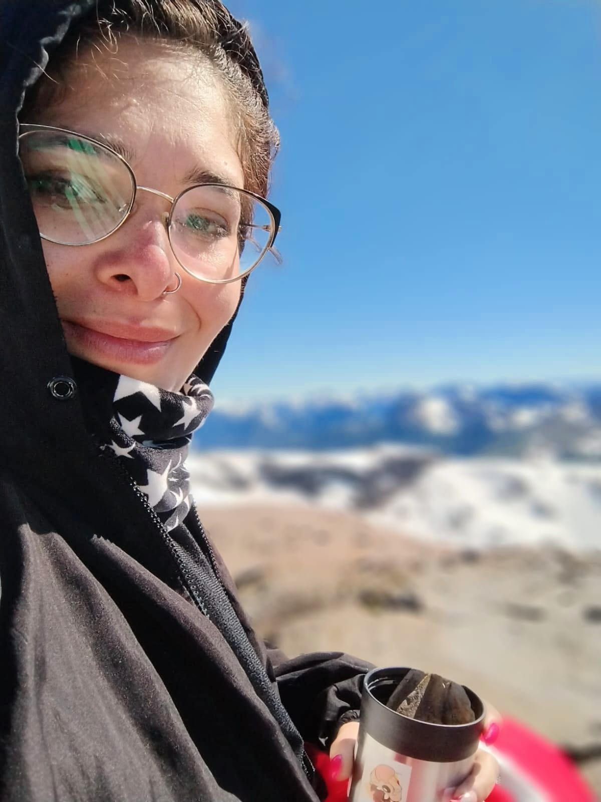
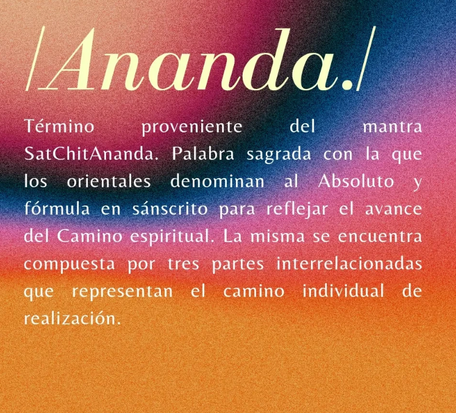

Sobre mí

Hola a todos! Quiero contarles un poco sobre mi: Mi nombre es Jazmín y tengo 30 años. Soy recibida de la UBA como Licenciada en Psicología y vivo en Bariloche (Arg.). Estoy inmersa en el ámbito psi hace más de diez años, desde antes de involucrarme con la carrera. Pasé por muchos terapeutas y modos de hacer psicología, siempre en la búsqueda de querer superarme y comprenderme. Hasta que finalmente di con la profesional que me impulsa actualmente y me mentorea con mucha amorosidad para crecer en este ambiente. Soy partidaria de que somos seres individuales inmersos en sistemas por lo que la mirada de mi terapia no sólo es individual sino que también parto de que somos en sociedad. Si bien, mi formación sigue los lineamientos de mi tan amado Freud, continuo constantemente con la lectura de otras corrientes y soy amante de las neurociencias. En mi profesión trato de unir el comportamiento y la fisiología del cerebro, comprender los por qué de las conductas y las correlaciones entre cuerpo-mente. Mi servicio está puesto en acompañar almas de todo el mundo en su proceso de transformación de forma online. Creo en la danza sagrada del alma y su historia. En alimentar lo sensible, despertar lo adormecido y darnos permiso para ser.
ANANDA: Un espacio para el bienestar y el desarrollo personal

Trabajo desde un enfoque terapéutico orientado al desarrollo personal donde cada proceso es único y se construye respetando la historia, los tiempos y las necesidades de cada persona. La terapia psicológica que ofrezco busca generar un espacio seguro de escucha y comprensión, favoreciendo el autoconocimiento, la regulación emocional y la transformación de patrones que generan malestar. A través del trabajo conjunto, acompañó a quienes consultan a desarrollar mayor claridad interna, fortalecer sus recursos personales y construir una vida más coherente con sus deseos y valores.
Metodología
La re-conexión con el cuerpo es la llave para c o m p r e n d e r n o s. Te acompaño a observar tus reacciones corporales, guiaremos la conciencia a explorar y procesar lo que duele, lo que incomoda y lo que pide ser sostenido. Este trabajo promueve:
- Autoconocimiento profundo.
- Regulación emocional.
- Presencia y dominio interno.
- Un vínculo compasivo con uno mismo.
Contacto
Instagram: https://www.instagram.com/anandapsi__/
Email: jazminricci59@gmail.com